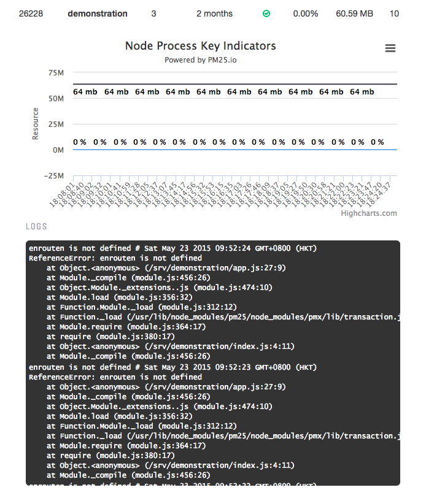
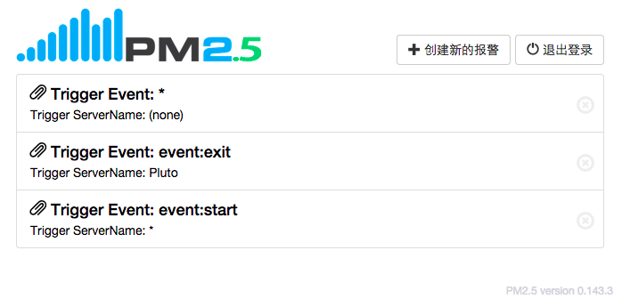

快速上手¶

创建新桶¶
登录成功后，点击界面中的“立即创建一个新桶”即可快速创建一个新的“桶”，桶的概念类似分组，旨在将多台不同组别服务器的监控通过“桶”进行聚集并加以区分。

创建新桶的界面中有两个必填字段：“新桶名称”和“新桶描述”，点击创建即可创建成功，并获得对应的公钥和私钥。

如果此前你的团队成员已经创建了一个桶，并且对方希望你可以查看该桶内服务器的指标和监控，你可以勾选“显示高级选项”，并向对方索取私钥和公钥填写到高级表单项中，这一步操作类似桶的镜像克隆。

无论你是通过哪种方式创建的桶，都可以看到类似如下界面，界面中可以看到公钥以及一串命令，这串命令的具体用途可以参考“如何安装”章节中的“接入指南”：

部署接入¶
npm install -g pm25
pm25 interact <secret_key> <public_key>
pm25 start processes.json

错误日志¶
如果你看到某个进程中包含错误信息，可以点击该进程，此时会展开当前进程的详细报错信息，方便你对代码中的问题进行定位。
监控报警¶

如果你希望在服务器进程发生如重启、退出、启动等状态时获得通知，可以通过新建监控报警配置来实现，监控报警配置目前支持的事件有：
event:restart
event:delete
event:stop
event:restart overlimit
event:exit
event:start
event:online
监控报警的一个配置示例如下：

创建完成后监控配置列表如下：
截止目前，监控报警配置已经完成，接下来需要做的只是下载iOS客户端登录你的账号，并确保开启了iOS的系统通知，此后在服务发生特定事件的时候，你的iOS客户端或者Apple Watch便可以实时收到消息通知提醒了。